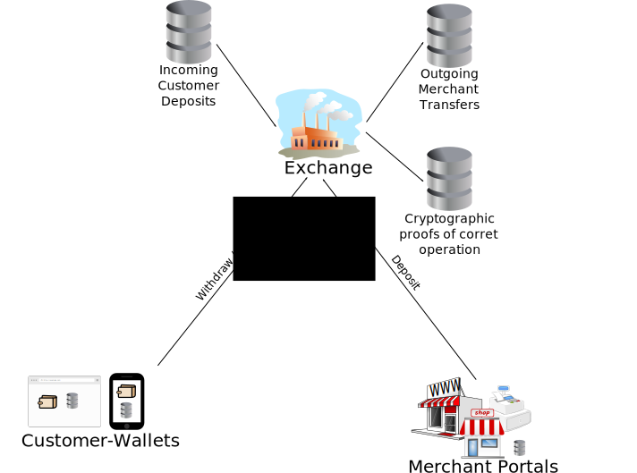

Taler uses efficient cryptographic primitives (such as RSA 2048 and EdDSA) and is thus expected to be able to handle large transaction volumes, only limited by the input/output capabilities of the database. Thus, running a Taler exchange should be profitable even with very low (less than 1 cent) transaction fees (at appropriate transaction volume).
Taler verwendet effiziente kryptographische Datenstrukturen (wie RSA 2048 und EdDSA) und ist daher in der Lage, große Transaktionsvolumen zu bewältigen, welche allein durch die Ein-/Ausgabe-Geschwindigkeit der zugrundeliegenden Datenbank begrenzt wird. Taler ist daher auch dann profitabel, wenn eine Wechselstube mit Transaktionsgebühren im Bereich von Bruchteilen eines Cents betrieben wird (entsprechendes Transaktionsvolumen vorausgesetzt).
Taler utilise des cryptographes primaires efficaces (comme RSA 2048 et EdDSA) et doit être capable de gérer des volumes de transaction importants, seulement limités par les capacités entrée/sortie de la base de donnée.
Taler utilizza efficienti algoritmi crittografici di base (come RSA 2048 e EdDSA) e quindi dovrebbe essere in grado di gestire transazioni di grande volume, limitato solamente dalle capacità di input/output del database. Quindi, usare un conio di Taler dovrebbe essere redditizio anche con un prezzo di transazione molto basso (meno di 1 cent) in relazione al volume di transazione appropriato.
Taler usa primitivas criptográficas eficientes (como RSA 2048 y EdDSA) y de este modo es capaz de manejar grandes volumenes de transacciones, sólo limitados por la capacidad de entrada/salida de la base de datos. Así, operar una casa de cambio Taler debría ser rentable aún con tasas de transacción muy bajas (menores a 1 centavo, con volúmenes de transacción apropiados).
All transactions in Taler are secured using modern cryptography and trust in all parties is minimized. Financial damage is bounded (for customers, merchants and the exchange) even in the case that systems are compromised and private keys are stolen. Databases can be audited for consistency, resulting in either the detection of compromised systems or the demonstration that participants were honest.
Alle Transaktionen in Taler sind durch moderne Kryptographiemethoden gesichert und das nötige aufzubringende Vertrauen in Systemteilnehmer wurde minimalisiert. Finanzieller Schaden (für Kunden, Händler und die Wechselstube) wird durch das System begrenzt, selbst wenn Teilnehmer komprommitiert und private Schlüssel entwendet werden. Datenbanken können auf ihre Konsistenz hin überprüft werden, was das Entdecken von Angriffen auf das System erleichtert oder alternativ aufzeigt, ob Veruntreuungen durch die Systemteilnehmer stattgefunden haben.
Toutes les transactions dans Taler sont sécurisées en utilisant la cryptographie moderne et la confiance dans tous les acteurs est minimisée. Les pertes financières sont limitées (pour les clients, les commerçants et la banque) même dans le cas ou le système est compromis ou si les clés privées sont volées. Les bases de données peuvent être auditées sur leur régularité, avec pour résultat soit la détection de systèmes compromis ou faisant la démonstration que les participants sont honnêtes.
Tutte le transazioni in Taler sono rese sicure usando la moderna crittografia e la fiducia in tutte le varie parti coinvolte è tenuta al minimo. Il danno finanziario è limitato (sia per il cliente, il mercante e la valuta) and in caso il sistema venisse compromesso e le chiavi private rubate. I database possono essere controllati per coerenza, facendo sì che vengano evidenziate sia la scoperta di sistemi compromessi, sia la dimostrazione che i partecipanti sono stati onesti.
Todas las transacciones en Taler están segurizadas usando criptografía moderna por lo que la confianza necesaria entre todas las partes se minimiza. El daño financiero se limita (para clientes, comerciantes y casas de cambio) aún en casos en lo que los sistemas sean atacados y se roben las claves privadas. Las bases de datos pueden auditarse por consistencia, resultando ya sea en la detección de los sistemas comprometidos o en la demostración de que los participantes actuaron honestamente.
The basic business model for Taler is the operation of an exchange. An exchange converts money from traditional payment systems (Mastercard, SEPA, Visa, BitCoin, ACH, SWIFT, etc.) to anonymous electronic coins in the same currency. The customer can then redeem the electronic coins at a merchant, who can exchange them for money represented using traditional payment systems at the exchange. The exchange can then charge fees (to the customer, merchant or both) to facilitate the transactions.
Das Geschäftsmodell hinter Taler besteht im Betreiben einer Wechelstube. Aufgabe der Wechselstube ist es, Geld traditioneller Bezahlungsysteme (Mastercard, SEPA, Visa, BitCoin, ACH, SWIFT, etc.) in anonyme Taler-Münzen der selben Währung zu konvertieren. Der Kunde kann die Münzen anschließend bei einem Händler einlösen, der sie seinerseits bei der Wecheslstube gegen Geld der traditionellen Bezahlungssysteme einlösen.
The business model basique pour Taler est une opération bancaire. Un bureau de change convertie la monnaie d'un système de paiement traditionnel (Mastercard, SEPA, Visa, BitCoin, ACH, SWIFT, etc.) vers une monnaie électronique anonyme dans la même devise. The client peut alors transférer sa monnaie électronique vers un commerçant, qui peut l'échanger contre de la monnaie en utilisant les système de paiement traditionnels à la bureau de change. La bureau de change peut ajouter des frais (au client, commerçant ou au deux) pour faciliter la transaction.
Il modello business di base per Taler è l'operazione di un ufficio cambi. La ufficio cambi converte i soldi da un sistema di pagamento tradizionale (Mastercard, SEPA, Visa, BitCoin, ACH, SWIFT, ecc.) a monete elettroniche anonime nella stessa valuta. Il cliente può allora restituire le monete elettroniche ad un mercante, che può scambiarle alla ufficio cambi ccon monete rappresentate dal sistema di pagamento tradizionale. La ufficio cambi può quindi tassare (il cliente, il mercante o entrambi) per facilitare le transazioni.
El modelo de negocios básico para Taler consiste en la operación de una casa de cambio. La casa de cambio convierte dinero de los sistemas de pagos tradicionales (Mastercard, SEPA, Visa, BitCoin, ACH, SWIFT, etc.) a monedas electrónicas anónimas en el mismo tipo de divisa. El cliente puede entonces canjear las monedas electrónicas con un comerciante, el cual los cambiará por dinero mediante los sistemas tradicionales de pago en la casa de cambio. La casa de cambio puede cobrar por este servicio (al cliente, al comerciante o a ambos) para facilitar las transacciones.
The exchange operator primarily operates a Web service portal and keeps databases with transaction details and cryptographic proofs. Its operational expenses are thus related to its interactions with the banking system and the operation of the computing infrastructure, while its income is based on transaction fees it may charge for the various interactions. Key interactions of the exchange include:
Der Betreiber einer Wechselstube betreibt primär eine Webseite sowie Datenbanken mit Transaktionsinformationen und kryptografischen Beweisen. Seine Ausgaben sind im Wesentlichen beschränkt auf die Interaktion mit dem Bankensystem und dem Betrieb der Rechnerinfrastruktur. Die Betreibereinnahmen kommen aus Gebühren die der Betreiber für die verschiedenen Interaktionen verlangen kann. Die wesentlichen Interaktionen der Wechselstube sind:
L'exploitant d'un bureau de change opère principalement un un portail de service web et garde une base de donnée des détails des transactions et des preuves cryptographiques. Ses coûts operationels sont donc liés à ses interactions avec le système banquaire et à l'infrastructure informatique, tandis que ses revenus sont basés sur les frais de transaction qu'il peut facurer pour les diverses opérations. Les opérations clées du bureau de change incluent:
Chi gestisce la ufficio cambi dovrà offrire un portale Web e mantenere vari database in cui custodire dettagli circa transazioni e certificati criptografici. I suoi costi dipenderanno dunque da quanto e come essa si interfaccerà col sistema bancario, e dalla sua infrastruttura informatica. Dall'altro lato, i suoi guadagni saranno basati sulle tariffe applicate alle varie operazioni offerte. Tali operazioni offerte comprendono:
El operador de casa de cambio opera fundamentalmente un portal de servicios web y mantiene bases de datos con detalles de las transacciones y pruebas criptográficas. Sus gastos operativos se originan en las interacciones con el sistema bancario y la infrastructura informática, mientras que sus ingresos se basan en tasas de servicio por transacción que pueden cobrar de sus varias interacciones. Las interacciones principales de la casa de cambio incluyen:
